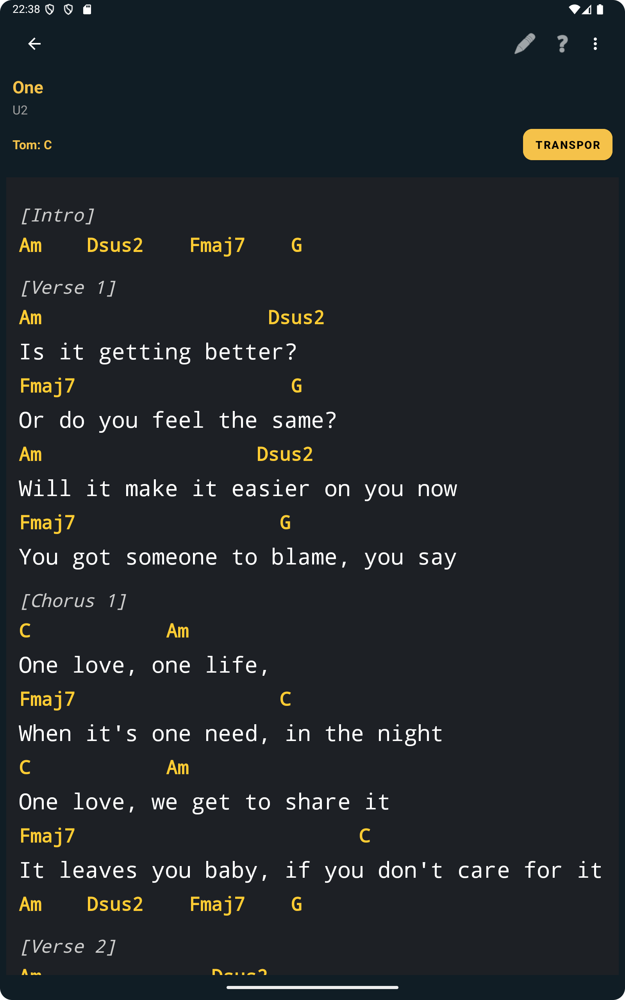
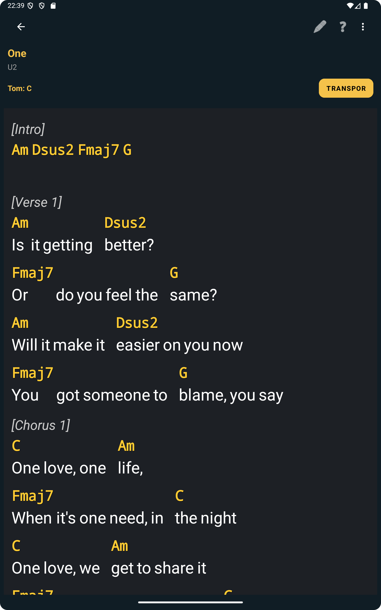

Porque é que o layout de leitura importa mais do que parece
Muitos músicos só reparam no layout quando ele começa a atrapalhar. Uma linha quebra num ponto estranho, um acorde parece demasiado afastado das palavras, ou o ecrã fica mais pesado do que devia. Em ensaio, até um pequeno desconforto visual pode atrasar tudo porque gastas mais energia a adaptar-te ao ecrã do que a seguir a música.
É por isso que o View Mode é útil. Não muda a música em si. Muda a apresentação das músicas com letras e acordes para que a leitura se adapte melhor ao dispositivo e à situação. Para alguns músicos isso significa manter uma estrutura mais tradicional. Para outros, significa deixar o layout adaptar-se mais livremente ao ecrã.
Abrir o View Mode a partir da música
O fluxo começa dentro de uma música com letras e acordes. A partir daí, podes abrir o seletor de View Mode e escolher entre Vista automática, Vista clássica e Vista responsiva. Isto mantém a escolha perto do momento real de leitura, em vez de esconder a funcionalidade num menu de definições.
A Vista automática é útil quando queres deixar o ChordFlow decidir a apresentação mais adequada. Em muitos casos, pode ficar visualmente muito próxima da Vista clássica, por isso a comparação mais relevante costuma ser entre Clássica e Responsiva.
A imagem seguinte é importante porque mostra a funcionalidade exatamente onde faz sentido: enquanto a música já está aberta e pronta a ser lida.

A Vista clássica mantém uma leitura mais familiar
A Vista clássica costuma ser a escolha mais segura quando queres que a música pareça mais próxima de uma cifra tradicional. Tende a transmitir uma sensação de estabilidade e previsibilidade, o que ajuda bastante se já estás habituado a ler letras com acordes num formato mais convencional.
Isto é especialmente útil quando a música tem fraseado claro e queres manter uma relação visual mais natural entre palavras e acordes. Para quem prefere consistência durante repetições em ensaio, a Vista clássica costuma parecer mais calma e mais fácil de seguir.
A próxima screenshot ajuda a ilustrar exatamente esse estilo de leitura mais tradicional.

A Vista responsiva adapta-se melhor ao ecrã
A Vista responsiva é útil quando queres que o layout da música se adapte mais ativamente ao espaço disponível no ecrã. Em ecrãs mais pequenos ou em músicas mais densas, isso pode facilitar a leitura porque a app ajusta a apresentação em vez de forçar sempre a mesma estrutura visual.
Ao mesmo tempo, convém perceber um detalhe prático: por causa dessa arquitetura responsiva, a vista pode em alguns casos mostrar espaços maiores entre palavras. Isso não é um erro no conteúdo da música. É um efeito visual da forma como o layout distribui a linha para manter a leitura adaptável ao ecrã.
Na prática, alguns músicos preferem essa troca porque a leitura global fica mais leve em telemóvel. Outros preferem a Vista clássica por ter um aspeto mais fixo. O objetivo do View Mode é precisamente deixar-te escolher a vista que faz mais sentido para aquela música e para aquele dispositivo.

Porque é que isto ajuda em estudo e ensaio reais
O valor do View Mode torna-se claro quando estás mesmo a usar a música. Se determinada vista te parecer menos confortável, podes ajustá-la logo e continuar. Isso significa menos interrupções, menos frustração visual e maior facilidade em manter o foco no tempo, na letra e no movimento harmónico.
Isto é especialmente útil quando trabalhas com músicas importadas de fontes diferentes, como se explica em este artigo sobre importação, porque nem todas as músicas ficam igualmente legíveis no mesmo modo. Também se liga bem a este artigo sobre acordes por secção e letras com acordes, já que o View Mode só faz sentido quando estás a trabalhar no formato de letras com acordes.
Usa a vista que melhor se adapta à música, ao ecrã e ao momento
Não existe um modo universalmente melhor. Uma música simples pode ficar bem em Automático ou Clássico. Uma música mais densa num ecrã pequeno pode tornar-se mais fácil de seguir em Responsivo. O importante é não estares preso a um único estilo de apresentação quando a leitura pode ficar melhor de outra forma.
Essa flexibilidade faz parte do que torna o ChordFlow prático em ensaio. A app não obriga todas as músicas com letras e acordes a caber num só molde. Dá-te margem para ajustar a experiência de leitura à tua forma real de trabalhar. E se essas músicas já estiverem organizadas num repertório limpo, como se descreve em este artigo sobre repertórios, o fluxo de estudo torna-se ainda mais fluido.
FAQ
O View Mode funciona em qualquer tipo de música?
Não. O View Mode é especialmente útil para músicas com letras e acordes. Ele muda a forma como esse formato é apresentado no ecrã.
Qual é a diferença entre Vista clássica e Vista responsiva?
A Vista clássica mantém um layout mais tradicional e fixo, enquanto a Vista responsiva adapta-se mais ao ecrã e pode por vezes introduzir espaços maiores entre palavras.
Porque é que a Vista responsiva pode mostrar espaços maiores entre palavras?
Isso acontece porque o layout está a adaptar-se à largura do ecrã. Faz parte da lógica de apresentação responsiva, não de uma alteração ao conteúdo da música.
Posso mudar de vista durante o ensaio?
Sim. Essa é uma das partes mais práticas da funcionalidade. Podes mudar a vista com a música já aberta, se outra apresentação te parecer mais confortável.
Leitura relacionada
Escolhe a vista que te deixa ler com menos esforço
Quando as letras com acordes aparecem de uma forma mais adaptada à música e ao ecrã, o ensaio torna-se mais confortável e menos distrativo. O ChordFlow deixa-te ajustar essa experiência de leitura em vez de te prender sempre ao mesmo layout.
Gratuito · Sem anúncios · Funciona offline